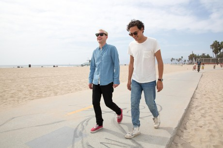

Le dimanche à Bama… euh à Paris c’est le jour de mariage. Tu as fait ta demande de mariage, tu as envoyé les faire-part et tu as (plus ou moins) géré l’organisation de celui-ci. Les parents et les copains vont mettre leurs beaux boubous, il faut maintenant choisir ton costume de marié pour être au…
SOHO, NYC, LE RETOUR 06 Juin 2016
Il est difficile de ne pas aimer SoHo à New York. Impossible même. Il y a trois ans maintenant, nous vous avions déjà proposé un look là-bas. Rues pavées, boutiques, restaurants, architecture cast-iron protégée… Dire que SoHo a du caractère est un euphémisme qu’on laisse aux pisse froid. Retourner à SoHo, après quelques mois ou…
VENTE PRIVÉE #17 : CHINOS M.STUDIO 04 Juin 2016
L’été approchant, on a tendance à ressortir de nos armoires des pantalons plus légers. Depuis la fin des années 2000, un certain type a pris le dessus sur les autres : le chino. A la base, c’était un pantalon inventé à des fins militaires dans la moitié du 19ème siècle, puis la mode contemporaine l’a…
10 PRINCIPALES ENSEIGNES DE MODE PAS CHÈRES 03 Juin 2016
Les grandes enseignes de mode, tout le monde a déjà passé la porte d’un de leurs magasins plusieurs fois dans sa vie, ne serait-ce que pour y acheter un slip ! Si on peut dire que les marques de luxe dont les vêtements défilent lors des fashion weeks sont des acteurs majeurs de la mode…
TENDANCES PRINTEMPS-ÉTÉ 2016 01 Juin 2016

Tous les six mois, avant d’entamer une nouvelle demi-saison, nous avons l’habitude de présenter notre désormais célèbre revue de tendances. Cela doit faire environ 5 ans que l’on a commencé à réaliser ce type d’articles (10 saisons donc) et à mesure que les années ont passé, je me suis persuadé de quelque chose : l’impact…